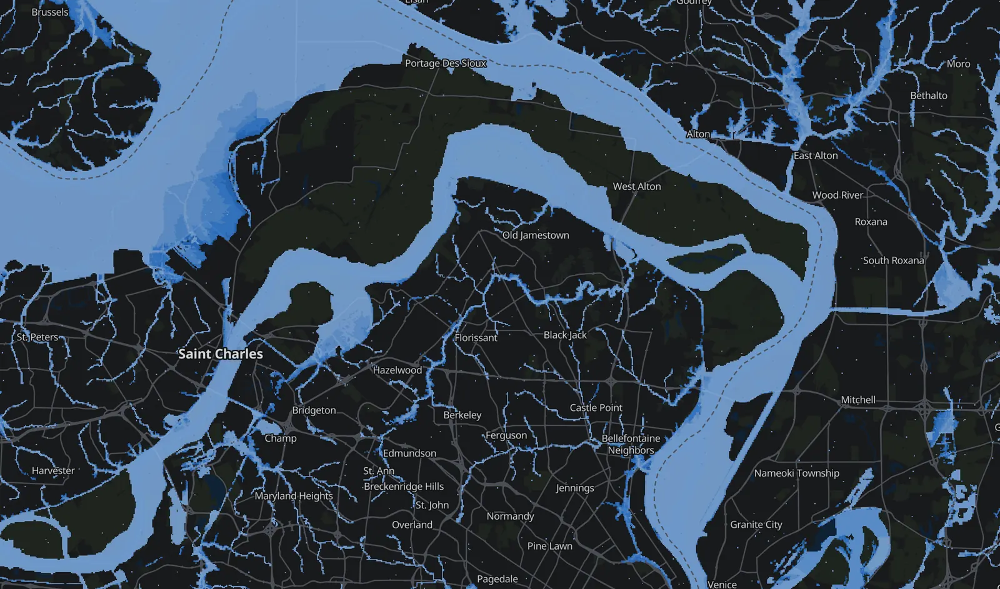
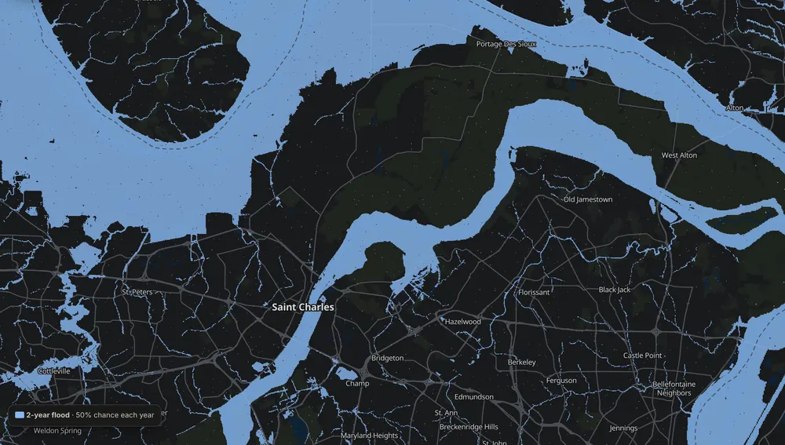
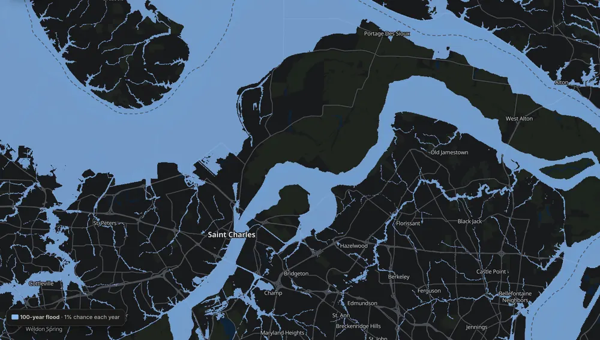
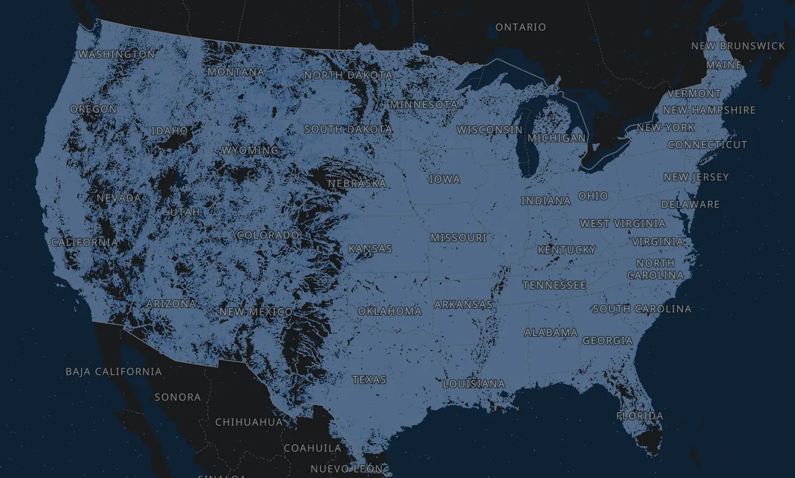

The question
When a river floods, which land goes under water? FEMA's flood maps answer that where a study has been done, for the 100-year and 500-year floods. I wanted one map that covers every river and stream the National Water Model tracks in the lower 48, for every flood from the common 2-year flood up to the 100-year, and the 500-year where I have the flows for it.

Why it matters
Return periods are how engineers size culverts, bridges and levees, but a "100-year flood" is hard to picture. Seeing the 2-year and the 100-year flood on a river you know makes it click: how much more land the rare flood takes, and how often the low ground already floods.
It's also a national data set. Every watershed's flood extents can be downloaded as a GeoTIFF, with a table of flows for every stream reach, so you can pull it into QGIS or ArcGIS Pro and use it.
Not a FEMA flood map. These are modeled flood extents from a research workflow. They show where water goes, not how deep it gets, and they leave out levees, culverts, dams and local studies. Don't use them for insurance, permits, property decisions or emergencies.
How it works
- Terrain. NOAA Office of Water Prediction's HAND (Height Above Nearest Drainage) data, from CIROH's public bucket, run through FIMserv.
- Flows. A return-period flow for every National Water Model reach. Most watersheds use CIROH's precomputed return-period flows (2 to 100 years). 171 watersheds use a Log-Pearson Type III fit to the yearly peak flows in the 44-year NWM v3.0 retrospective (1979 to 2023), which also gives the 500-year flood.
- Flooding. HAND's rating curves turn each reach's flow into a water level, and every cell that sits lower than that above its stream floods. Each watershed gets a 10 m flood extent for each return period.
- The web map. All the watersheds go into one national tile set, 9.55 m pixels at full zoom. Each pixel stores which floods reach it, and your browser colors it for whatever you pick, so one set of tiles covers every view.

2-year flood · 50% chance each year
100-year flood · 1% chance each yearWhat's in it
Every watershed in the lower 48 that NOAA publishes HAND data for is on the map.

What it doesn't show:
- Depth. It shows where water goes, not how deep it gets.
- Levees, culverts, dams and local studies. None of these are in the model.
- The 500-year flood everywhere. Only the 171 Log-Pearson watersheds have it. Elsewhere the 100-year flood is the biggest one shown.
- Every reach. Reaches CIROH doesn't have flows for are left out.
- Alaska, Hawaii, Puerto Rico and the Pacific islands. The watersheds with HAND data were run, but there are no return-period flows outside the lower 48 yet.
- Perfect terrain. How good a map like this is depends a lot on the elevation and stream data behind it, which our lab has looked at directly (Miskin et al., 2025).
Try it yourself
About 10 minutes.
- Open the map and search for a town on a river you know.
- Before you touch anything, guess how much wider the 100-year flood is than the 2-year flood there.
- Switch to One period and slide from the 2-year to the 100-year flood. How close was your guess?
- Click a stream to see its flow for each return period.
Questions to answer afterward:
-
A 100-year flood has a 1% chance of happening in any year. What are the odds of at least one in 30 years?
Answer
1 − 0.9930 ≈ 26%. A "100-year flood" can happen twice in a decade. - Where does the flooded area grow the most between the 2-year and the 100-year flood: narrow valleys or flat land? Why?
- Name two things this map leaves out that would change who actually floods.
Data & code
The site is a static page on GitHub Pages. MapLibre draws the map, and the national flood tiles are a single PMTiles file hosted on Hugging Face. The code is MIT-licensed and the data is CC BY 4.0.
Sources: NOAA Office of Water Prediction (HAND, National Water Model v3.0 retrospective), CIROH (return-period flows and the public HAND bucket), FIMserv from the Surface Dynamics Modeling Lab at the University of Alabama (Baruah et al., 2025), and USGS (Watershed Boundary Dataset, NHDPlus V2).
To cite the data set:
National Flood Map contributors (2026). National Flood Map: return-period flood extents for US watersheds (version 1.0.0) [Data set]. https://theonlyrealagentp.github.io/national-flood-map/
Key terms
- Return period
- The average time between floods of a given size. A 100-year flood has a 1% chance of happening in any year.
- HUC8
- A mid-size watershed in the USGS Watershed Boundary Dataset, named by an 8-digit code.
- HAND
- Height Above Nearest Drainage: how high each spot sits above the stream it drains to.
- National Water Model
- NOAA's model of streamflow on millions of river and stream reaches across the US.
- Log-Pearson Type III
- The standard distribution for flood frequency in the US. Fit it to yearly peak flows to get the 100-year flow.
- Flood extent
- The area that's under water, without the depth.
How to cite
This page: